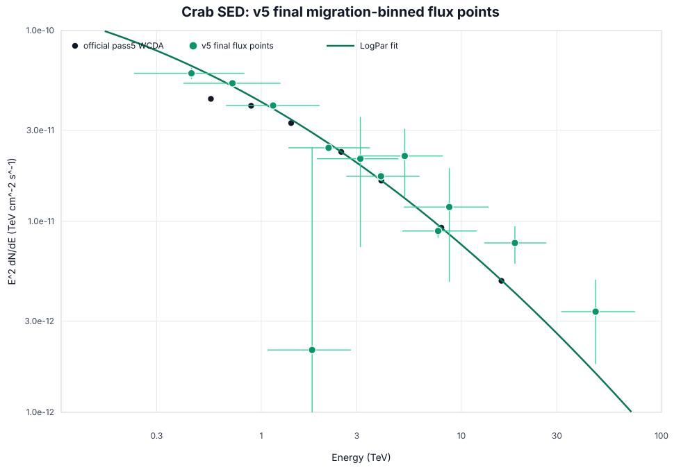

Crab SED v5 Final Migration-Binned Flux Points
The final v5 SED is reported as twelve migration-informed energy flux points. The fit uses the current annulus-normalized signal and aperture-conditioned response, then changes only the final SED grouping layer; no Stage A-E products are recomputed here.
migration-informed v5 SED
15.71/9; max pull 2.031
phi0 2.2562e-12; alpha 2.741
aperture-conditioned Stage A + annnorm Stage E
1. Final SED

Green points are the final twelve v5 flux points. The green curve is the independent LogPar fit to those points. Black points are official pass5 WCDA.
2. Flux Points
Flux values are derived from each group's fitted normalization ratio at E50. The cell composition columns are retained for auditability, but the SED is interpreted on the energy axis.
| point | E16 TeV | E50 TeV | E84 TeV | E2 dN/dE | E2 err | dN/dE | dN/dE err | pull | pass5 ratio | cells | predE span | Nhit span |
|---|---|---|---|---|---|---|---|---|---|---|---|---|
| 1 | 0.2313 | 0.448 | 0.8235 | 5.97041e-11 | 4.06349e-12 | 2.97534e-10 | 2.02503e-11 | -1.37 | 1.361 | 1;2;3 | [2,2.5)..[3,3.25) | [125,200) |
| 2 | 1.074 | 1.795 | 2.809 | 2.12124e-12 | 2.23036e-11 | 6.58471e-13 | 6.92342e-12 | -1.214 | 0.0749 | 4 | [3.25,3.5) | [125,200) |
| 3 | 0.4079 | 0.7178 | 1.248 | 5.29419e-11 | 2.31362e-12 | 1.02749e-10 | 4.49023e-12 | 0.7905 | 1.262 | 14;15;16 | [2.5,3)..[3.25,3.5) | [200,300) |
| 4 | 1.898 | 3.127 | 4.844 | 2.13008e-11 | 1.39592e-11 | 2.17888e-12 | 1.42790e-12 | 0.1153 | 1.086 | 17 | [3.5,3.75) | [200,300) |
| 5 | 0.6661 | 1.146 | 1.959 | 4.04766e-11 | 1.26937e-12 | 3.08103e-11 | 9.66229e-13 | 1.211 | 1.125 | 26;27;28;29 | [2.5,3)..[3.5,3.75) | [300,500) |
| 6 | 3.066 | 5.21 | 8.076 | 2.20196e-11 | 8.56455e-12 | 8.11186e-13 | 3.15512e-13 | 1.028 | 1.679 | 30 | [3.75,4.0) | [300,500) |
| 7 | 1.367 | 2.169 | 3.489 | 2.42945e-11 | 9.37747e-13 | 5.16174e-12 | 1.99238e-13 | -1.432 | 0.9619 | 39;40;41;42 | [3,3.25)..[3.75,4.0) | [500,800) |
| 8 | 5.162 | 8.701 | 13.68 | 1.18986e-11 | 7.07967e-12 | 1.57180e-13 | 9.35222e-14 | 0.4724 | 1.397 | 43 | [4.0,4.25) | [500,800) |
| 9 | 2.659 | 3.964 | 6.175 | 1.72420e-11 | 1.01203e-12 | 1.09756e-12 | 6.44218e-14 | 0.7977 | 1.05 | 52;53;54;55 | [3.25,3.5)..[4.0,4.25) | [800,1100) |
| 10 | 5.071 | 7.646 | 11.93 | 8.91007e-12 | 6.97902e-13 | 1.52392e-13 | 1.19364e-14 | -0.9553 | 0.9315 | 65;66;67 | [3.5,3.75)..[4.0,4.25) | [1100,2000) |
| 11 | 12.99 | 18.5 | 26.56 | 7.71426e-12 | 1.71557e-12 | 2.25307e-14 | 5.01059e-15 | 2.031 | 1.58 | 68;69 | [4.25,4.5)..[4.5,4.75) | [1100,2000) |
| 12 | 31.5 | 46.83 | 73.67 | 3.36704e-12 | 1.57908e-12 | 1.53557e-15 | 7.20155e-16 | 1.118 | 0.6894 | 81;82;83 | [4.5,4.75)..[5,6) | [2000,3000) |
3. Fit Summary
| fit | chi2 | ndof | chi2/ndof | max |pull| | phi0 | alpha | beta |
|---|---|---|---|---|---|---|---|
| final v5 migration 12-bin | 15.707 | 9 | 1.745 | 2.031 | 2.25623e-12 | 2.7409 | 0.06671 |
| 7-bin conservative diagnostic | 6.7918 | 4 | 1.698 | 1.494 | 2.31470e-12 | 2.7401 | 0.076301 |
| fine 30-cell diagnostic | 121.58 | 27 | 4.503 | 5.658 | 2.34019e-12 | 2.7488 | 0.13458 |
4. Binning Audit
Final v5 migration 12-bin
| group | cells | restored | Nhit span | predE span | E50 TeV | E16-E84 TeV | sigma68 | excess | model | pull | ratio/pass5 |
|---|---|---|---|---|---|---|---|---|---|---|---|
| 1+2+3 | 1;2;3 | [125,200) | [2,2.5)..[3,3.25) | 0.448 | 0.2313-0.8235 | 0.2758 | 5431.3 | 5937.9 | -1.37 | 1.361 | |
| 4 | 4 | 4 | [125,200) | [3.25,3.5) | 1.795 | 1.074-2.809 | 0.2088 | 11.703 | 161.06 | -1.214 | 0.0749 |
| 14+15+16 | 14;15;16 | [200,300) | [2.5,3)..[3.25,3.5) | 0.7178 | 0.4079-1.248 | 0.2429 | 4073.9 | 3933.2 | 0.7905 | 1.262 | |
| 17 | 17 | 17 | [200,300) | [3.5,3.75) | 3.127 | 1.898-4.844 | 0.2035 | 105.46 | 97.491 | 0.1153 | 1.086 |
| 26+27+28+29 | 26;27;28;29 | [300,500) | [2.5,3)..[3.5,3.75) | 1.146 | 0.6661-1.959 | 0.2343 | 3479.9 | 3347.8 | 1.211 | 1.125 | |
| 30 | 30 | [300,500) | [3.75,4.0) | 5.21 | 3.066-8.076 | 0.2103 | 105.28 | 63.2 | 1.028 | 1.679 | |
| 39+40+41+42 | 39;40;41;42 | 39 | [500,800) | [3,3.25)..[3.75,4.0) | 2.169 | 1.367-3.489 | 0.2035 | 1484.5 | 1566.6 | -1.432 | 0.9619 |
| 43 | 43 | 43 | [500,800) | [4.0,4.25) | 8.701 | 5.162-13.68 | 0.2117 | 30.062 | 21.612 | 0.4724 | 1.397 |
| 52+53+54+55 | 52;53;54;55 | [800,1100) | [3.25,3.5)..[4.0,4.25) | 3.964 | 2.659-6.175 | 0.183 | 513.52 | 489.47 | 0.7977 | 1.05 | |
| 65+66+67 | 65;66;67 | [1100,2000) | [3.5,3.75)..[4.0,4.25) | 7.646 | 5.071-11.93 | 0.1858 | 230.38 | 247.62 | -0.9553 | 0.9315 | |
| 68+69 | 68;69 | [1100,2000) | [4.25,4.5)..[4.5,4.75) | 18.5 | 12.99-26.56 | 0.1553 | 51.06 | 27.998 | 2.031 | 1.58 | |
| 81+82+83 | 81;82;83 | [2000,3000) | [4.5,4.75)..[5,6) | 46.83 | 31.5-73.67 | 0.1845 | 16.454 | 7.83 | 1.118 | 0.6894 |
7-bin conservative diagnostic
| group | cells | restored | Nhit span | predE span | E50 TeV | E16-E84 TeV | sigma68 | excess | model | pull | ratio/pass5 |
|---|---|---|---|---|---|---|---|---|---|---|---|
| 1+2+3 | 1;2;3 | [125,200) | [2,2.5)..[3,3.25) | 0.4544 | 0.235-0.8316 | 0.2745 | 5431.3 | 5874.6 | -1.199 | 1.352 | |
| 14+15+16 | 14;15;16 | [200,300) | [2.5,3)..[3.25,3.5) | 0.7236 | 0.412-1.256 | 0.2421 | 4073.9 | 3952.8 | 0.6803 | 1.258 | |
| 26+27+28+29+30 | 26;27;28;29;30 | [300,500) | [2.5,3)..[3.75,4.0) | 1.166 | 0.676-2.037 | 0.2395 | 3585.2 | 3463.5 | 1.044 | 1.135 | |
| 40+41+42 | 40;41;42 | [500,800) | [3.25,3.5)..[3.75,4.0) | 2.433 | 1.618-3.781 | 0.1843 | 1201.1 | 1278.8 | -1.494 | 0.9662 | |
| 52+53+54+55 | 52;53;54;55 | [800,1100) | [3.25,3.5)..[4.0,4.25) | 3.958 | 2.657-6.158 | 0.1826 | 513.52 | 500.64 | 0.4272 | 1.053 | |
| 65+66+67+68+69 | 65;66;67;68;69 | [1100,2000) | [3.5,3.75)..[4.5,4.75) | 8.087 | 5.197-13.72 | 0.2107 | 281.44 | 278.85 | 0.1214 | 1.027 | |
| 81+82+83 | 81;82;83 | [2000,3000) | [4.5,4.75)..[5,6) | 46.33 | 31.26-72.64 | 0.1831 | 16.454 | 7.424 | 1.17 | 0.704 |
fine 30-cell residual reference
Fine 30-cell row-level diagnostics were not regenerated in this local pass; see the fit summary row and existing migration group diagnostics for the failure-mode comparison.
5. Diagnostics
The conservative 7-bin fit and fine 30-cell fit are retained as diagnostics. They are not the headline flux-point set.

The blue 7-bin conservative points are a robustness check. The final SED result remains the green 12-bin set.

Stage F pulls for the v5 12-bin main result and 7-bin conservative cross-check.

Normalized true-energy kernels used to motivate the final bin merging.
Adjacent final-bin true-energy overlaps
| analysis | left | right | overlap |
|---|---|---|---|
| conservative_7bin | 1+2+3 | 14+15+16 | 0.69 |
| conservative_7bin | 14+15+16 | 26+27+28+29+30 | 0.6593 |
| conservative_7bin | 40+41+42 | 52+53+54+55 | 0.5508 |
| conservative_7bin | 26+27+28+29+30 | 40+41+42 | 0.4313 |
| conservative_7bin | 52+53+54+55 | 65+66+67+68+69 | 0.4084 |
| conservative_7bin | 65+66+67+68+69 | 81+82+83 | 0.0629 |
| v5_migration_12bin | 52+53+54+55 | 65+66+67 | 0.4315 |
| v5_migration_12bin | 43 | 52+53+54+55 | 0.3995 |
| v5_migration_12bin | 4 | 14+15+16 | 0.3813 |
| v5_migration_12bin | 30 | 39+40+41+42 | 0.3719 |
| v5_migration_12bin | 17 | 26+27+28+29 | 0.3297 |
| v5_migration_12bin | 65+66+67 | 68+69 | 0.2608 |
| v5_migration_12bin | 1+2+3 | 4 | 0.2146 |
| v5_migration_12bin | 68+69 | 81+82+83 | 0.2058 |
| v5_migration_12bin | 14+15+16 | 17 | 0.1727 |
| v5_migration_12bin | 39+40+41+42 | 43 | 0.1689 |
| v5_migration_12bin | 26+27+28+29 | 30 | 0.1668 |
6. Outputs
Machine-readable outputs are in apply/report/assets/v5-migration-binning: v5_final_migration_flux_points.csv, v5_migration_binning_summary.json, v5_migration_binning_groups.csv, and report figures. The legacy comparison URL now points to this report.